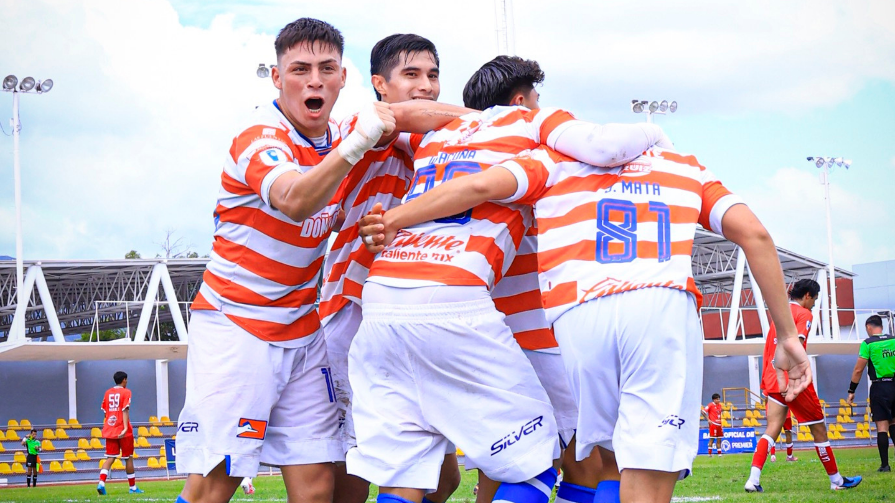
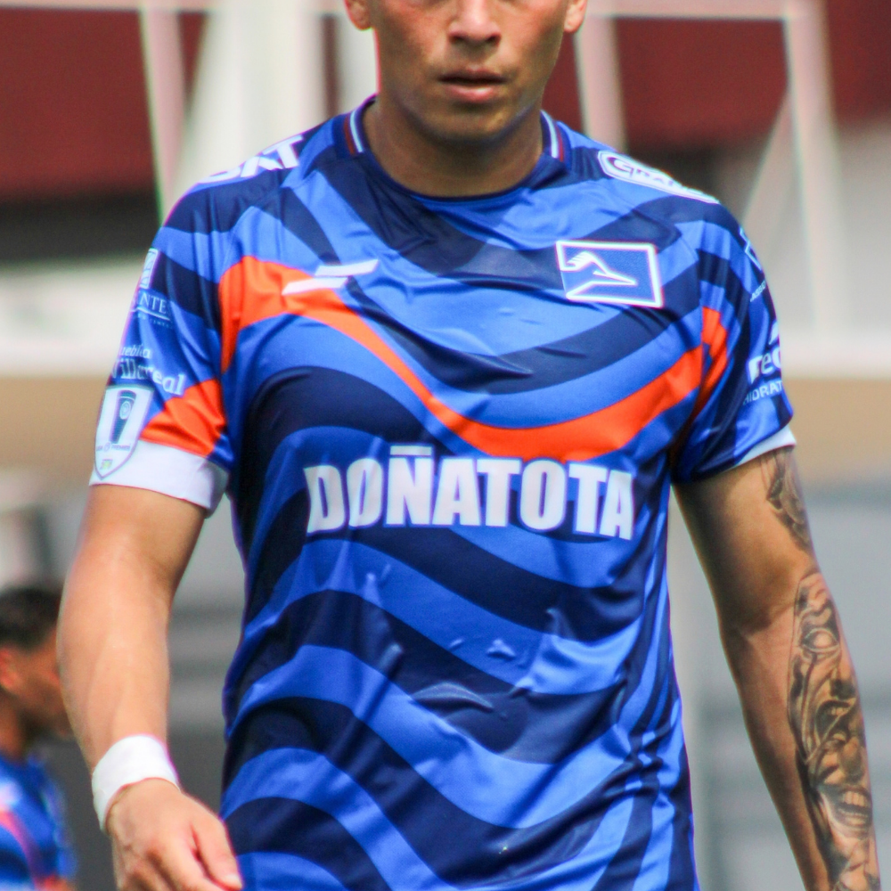
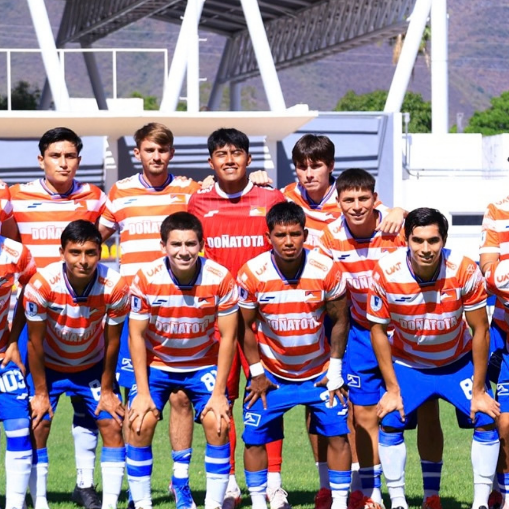

Correcaminos
Los mejores momentos del fútbol capturados a través de la emoción, la pasión y la intensidad de cada partido.

La pasión del fútbol en cada imagen
Proyecto de fotografía deportiva enfocado en capturar los momentos más destacados de los partidos de Correcaminos. A través de la fotografía busco transmitir la emoción, el movimiento y la intensidad del fútbol, destacando el esfuerzo, la pasión y la identidad de los jugadores dentro de la cancha.
Área: Fotografía deportiva
Técnica: Fotografía digital
Disciplina: Fútbol

